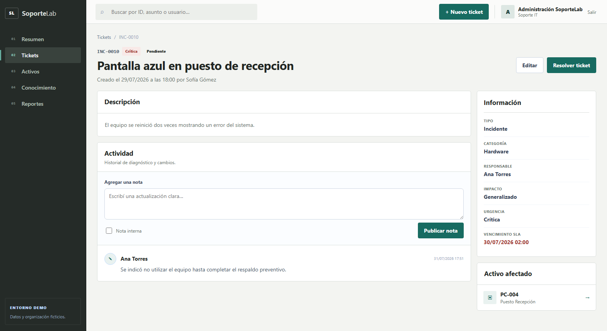

Confirmar qué ocurre.
BL PORTAFOLIO DE SOPORTE IT
LABORATORIO PERSONAL · DATOS FICTICIOS
SoporteLab
Resolver. Documentar. Prevenir.
Benjamin Ludueña Soporte IT · Help Desk01 · PRIORIZAR
Ver primero
lo que requiere atención.
El panel organiza tickets por prioridad, estado y vencimiento para entender el impacto antes de intervenir.
Dashboard · métricas simuladas


02 · REUNIR EVIDENCIA
Conectar el reporte
con su contexto.
Cada caso conserva prioridad, responsable, SLA, activo afectado y un historial claro de actividades.
Incidente simulado · pantalla azul
03 · TRABAJAR CON MÉTODO
De un síntoma a una decisión respaldada.
Impacto y urgencia.
Datos antes que supuestos.
Dentro del alcance autorizado.
Confirmar el servicio.
Dejar conocimiento útil.
Antes de cambiar una configuración, entender qué funciona, qué falla y qué evidencia sostiene la hipótesis.
04 · VINCULAR ACTIVOS
El incidente no existe
aislado del equipo.
SoporteLab relaciona usuarios, equipos, estado, sistema operativo y actividades para conservar trazabilidad.
Inventario educativo · 12 activos ficticios


05 · PREVENIR
Una solución documentada
se puede reutilizar.
Diagnóstico, causa raíz y resolución se transforman en procedimientos claros para futuros casos.
Base de conocimiento · datos ficticios
BUSCO OPORTUNIDADES EN
Soporte IT · Help Desk
Service Desk · Operaciones IT
Benjamin Ludueña
linkedin.com/in/benjamin-lud-luq
github.com/benjaluduena
Resolver.Documentar.Prevenir.